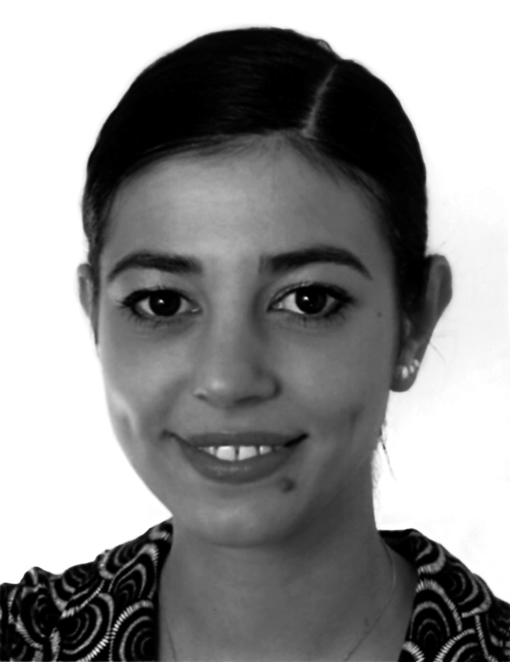

Yan Lei "Climbing Space"
Nataline Colonnello
In all his works Yan Lei (*1965, Hebei, China, lives and works in Beijing) resorts to the support of images. In his past works (performances, installations and so forth) photographs served mostly as documents evidencing the existence (or the past existence) of the work of art itself. Since the end of 1998, however, pictures started to have a much greater relevance in Yan Leis artistic creation, becoming an essential constituent tool of a quite new trend that characterizes a substantial part of his recent production: the paintings. In the complex pictorial process Yan Lei now uses, the photograph no longer supports the work when the latter is already begun or completed, but even before it exists; namely, the photo now establishes the origin of a painting. Although the time order has changed, the image, intended as a photodocument of reality, keeps its value unaltered. It is important to point out that he regards reality as "rubbish", but all the subjects he depicts are drawn from his actual life and this because, as he states, "hey have a latent capacity, a potentiality, an innermost reason that has to do with psychology. (…) This is an age of interchanges…my works are my personal spiritual reaction to the external world, I can say only this, it is a need of life".
Yan Lei tries to build up a detached relationship, an objective interchange with the world firstly by means of photography - to quickly fix an impression -, and secondly by means of the real work of art –to make a reflection. Moreover, whilst a camera is a mechanical precision instrument, a painting is not, unless Yan Lei, in his technique, has recourse to any machine or system of a scientific nature. And he does! In fact, after having taken a colour picture, Yan Lei processes it through a computer using software which is able to measure and highlight the outline of the subjects, as well as the brightness variations inside each shape. With this method, each shade of a single colour (if the painting will be monochrome) is allocated a number computed by the information system; the same thing happens for each shade related to different colours, if Yan Lei wants to keep the polychromy of the picture unaltered in the final work. After this, Yan Lei resizes the image obtained, enlarging its dimensions and eventually prints it directly on to the canvas. At this point of the process, the canvas looks like the equivalent of a physical map of the original picture. Once the skeleton, the linear structure of reality appears on the canvas, Yan Lei is able to start applying colours according to the respective numbers/hues, which correspond to those shown on each jar of paint he employs. Following the isometric lines on the surface with the paint and the brush, he is able to give the image back its tridimensionality and reality. When the work is finished, the black grid and the numbers become invisible under the coats of paint.
One of the main characters of Yan Leis pictorial play is acrylic colour. Being an industrial synthetic substance, acrylic paint is not a natural pigment, and yet he uses it to give birth to realistic compositions. This kind of material, with its bright and glassy effect is on the one hand the most apt to depict the chromatic blaze of our post-modern age but on the other is extremely estranging. In many cases Yan Lei employs a single tone in all its shades to coat like a filter the entire surface of the painting. In his 2002-2003’s series called "Project Pompidou" (Centre Pompidou, Exhibition "Alors la Chine?" 25.6. - 13.10.03) which comprises thirteen paintings, each one is monochrome and portrays a person. The colours he chose and that alternate on the different canvases are just four: cyan, yellow, magenta and green. His 2002s series entitled "International Landscapes" (Shanghai Biennale 2002), however, consists of polychrome works but the visual outcome is equally artificial. In this series, for example, the untitled painting of a view of the Sidneys Opera House reveals a bogus look: the building is yellowish, the water is emerald green and the sky cobalt blue. His colour is nothing but a metaphor of an “aesthetic of polish” that is in contrast to the grayness of contemporary cities.
Yan Leis colours, then, far from having only an aesthetical purpose, have to be investigated above all in their property of functioning as an extremely effective support of the other fundamental element of his creation: the concept. In "International Landscapes", for example, Yan Lei represents foreshortenings of various famous monuments from different cities all around the world. He derived all his subjects from pictures he took not in cities he really visited, but in Shenzhen’s "Window of the World", a theme park where scenes and sites of historical interest throughout the world are reproduced in scale models. The depicted cities thus could be as real as the real ones, as fake as the real ones.
In the series entitled "Project Pompidou", the concept is also of the utmost importance. This series portrays a gallery of international characters gravitating around the world of art, from the cleaning attendant up to art critics, scholars, Culture Department officials and so forth. In each of these works Yan Lei depicts those people he knew at the Paris’ Centre Pompidou in 2002 and who are directly involved in the mounting and organization of the exhibition "Alors la Chine?". In his thirteenth and biggest painting Yan Lei showes a Chinese street portrait painter whom he met outside the doors of Centre Pompidou. He says: "Why do his works have no acceptance whilst mine do? Why was he sitting outside the Pompidou whilst I stood inside? I went to Paris from China. He also went to France to paint. Many Chinese people go abroad and are all in this condition of being at the same time both "in" and "out". When I went to France I recognized myself in this identity as well". As for "International Landscapes", this whole series is planned as one single artwork composed of different paintings. Here Yan Lei plays again with the transient boundaries between appearance and reality. In this series he offers a humorous reflection on the question of the status of the individual - that is - what a person represents by his/her role in society and not as a human being.
Yan Leis series called "Climbing Space" is a metaphor around the questions of status, "artists competition for success" and public spaces. To this series belong paintings like "Sanlitun", Beijing’s embassies district, an international area full of bars and restaurants; "Langfang", representing Yan Leis own laptop, a work tool, but nowadays also a status symbol in China; "Hong Kong Artists Commune", where the subject seems to be a red-light district; "Hong Kong Shanghai Bank", a view of the façade of a bank, symbol of economic welfare and success; and many more. In the same series Yan Lei also portrays airports, like those of "Hong Kong Kaitak Airport" and "Paris Roissy Airport". In Chinese to say "that man is an airport" means, in a figurative sense, that he is a successful person and that his network of connections is growing as well as his social status. Regardless of his acceptance or rejection of this situation, Yan Lei is personally involved in it. He, as an artist, is forced to enter the lists, that non-space in which social climbing takes place. He admits: "With these works I face my condition of being an artist in the world. Nobody can avoid this problem, that is to admit that art is competitive".
Nataline Colonnello
All quotations in this text make reference to an interview with Yan Lei held in Beijing on March 10, 2003.
Text originally published on: www.galerieursmeile.com, 2003

Nataline Colonnello
Nataline Colonnello was born in Pordenone, Italy, in 1976. She graduated in Ca’Foscari University in Venice with a specialization in Chinese contemporary art.
Since 2001 she is based in Beijing. Betwwen 2002 and 2003 she worked as a freelance editor and art critic at www.chinese-art.com. She collaborated with international art institutions, organizations and art collections, participated in panels and research programs, and published in art periodicals, exhibition catalogues, and monographs. Colonnello is currently working as the artistic director of Galerie Urs Meile, Beijing-Lucerne, Beijing.